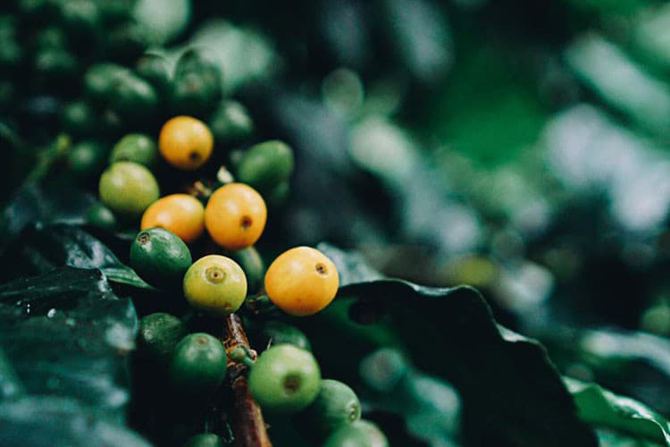
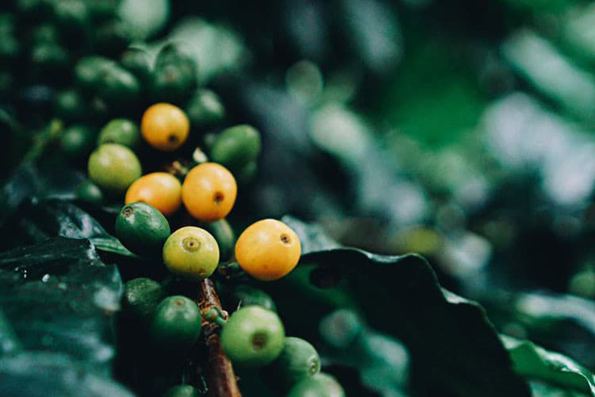

私たちはおいしさだけでなく、
産地の暮らしや環境にも
目を向けたいと考えています。
森林や動物の保護、
産地で暮らす人々の生活向上、コミュニティへの配慮。
知ることで、コーヒーはもっと奥深くなるはず。
産地の物語とともに、おいしいコーヒーをお届けします。

Origin Story
産地のストーリー
産地を訪れて、私たちはたくさんの物語に出会いました。
どんな場所で、どんな人たちが、どんな想いでコーヒーをつくっているのか。
そのストーリーが、コーヒーをさらに味わい深くしてくれます。
ぜひ、海の向こうに想いを馳せながら読んでみてください。


Cascara Syrup
カスカラシロップ
カスカラとはコーヒーの果皮と果肉部分を乾燥させたもの。スペイン語で「籾 （もみ）」を意味するcáscaraに由来します。独特な甘酸っぱさのあるフルーテ ィな実で、その見た目から「コーヒーチェリー」と呼ばれます。
カスカラは、一部堆肥として使われることがありますが、ほとんどが使い道がなく捨てられていました。そこで私たちはコーヒー農家さんの新しい収入機会の創 出とコーヒーの美味しさを“丸ごと”提案する方法として、カスカラを使ったシロップを開発。現在は、ご家庭でもお店でもお楽しみいただけるようオンライン ショップで販売しています。
News
ニュース
-
2023年5月12日
YouTubeでご紹介いただきました！
-
2023年2月16日
『ELLE gourmet』3月号にカスカラパウダーが紹介されました
-
2023年1月18日
【2023年2月1日（水）～3月12日（日）開催】『COFFEE HOLIC #3』にミャンマーの豆を提供します！
For Daily Use
ご家庭用のコーヒー豆をお探しの方
ドリップバッグ、デカフェ、シーズナルブレンド、カスカラシロップなどご家庭でお楽しみいただけるラインアップを取り揃えています。ご購入は、坂ノ途中Online Shopからどうぞ。

For Business
焙煎用の生豆や業務用の焙煎豆をお探しの方
アジアを中心に世界各国の生豆を取り扱っています。 その他、業務用の焙煎豆や店舗でご使用いただけるカスカラシロップなども販売しています。 業務用サイトからどうぞ。
コーヒーカップの向こう側、
遠く海の向こうにある産地に
想いを馳せてみてほしい。
美しい自然、そこに住む人たちの暮らし、
そしてその未来。